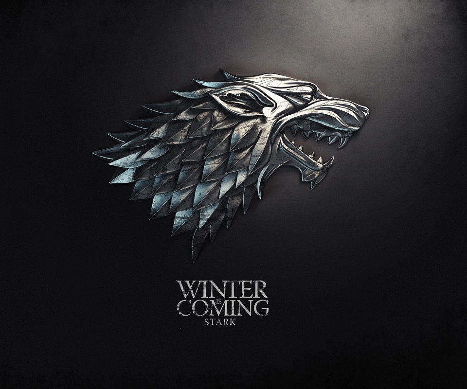

House Stark of Winterfell is a Great House of Westeros, ruling over the vast region known as the North and the Vale as Kings in the North from their seat in Winterfell, recently retaken by the Starks from House Bolton. It is by far one of the oldest lines of Westerosi nobility, claiming a line of descent stretching back over eight thousand years. The head of the house is the Lord of Winterfell. Before the Targaryen conquest, the leaders of House Stark ruled over the region as the Kings in the North. Jon Snow is the current King in the North and the Vale, partially due to the allegiance of Petyr Baelish, the Lord Regent of the Vale, to House Stark.
Their rule in the North seemingly ended after the events of the Red Wedding when House Frey and House Bolton betrayed them, after joining alliance with House Lannister. Roose Bolton personally killed King Robb Stark. Both the North and Winterfell were taken over by House Bolton, but their hold was jeopardized when Sansa Stark escaped their clutches after learning that her brothers Bran and Rickon Stark were still alive. House Stark were restored to their former stature after the Battle of the Bastard salbeit at great cost with Rickon's death. Their success in this battle later leads to the resurgence of House Stark as the royal family of the North, with its vassals declaring Jon Snow as King in the North.
House Stark's sigil is a grey direwolf on a white background, over a green escutcheon. They are one of the few noble Houses whose family motto is not a boast or threat. Instead, the House Stark family motto is a warning, one that no matter the circumstances will always be relevant: "Winter is Coming".
